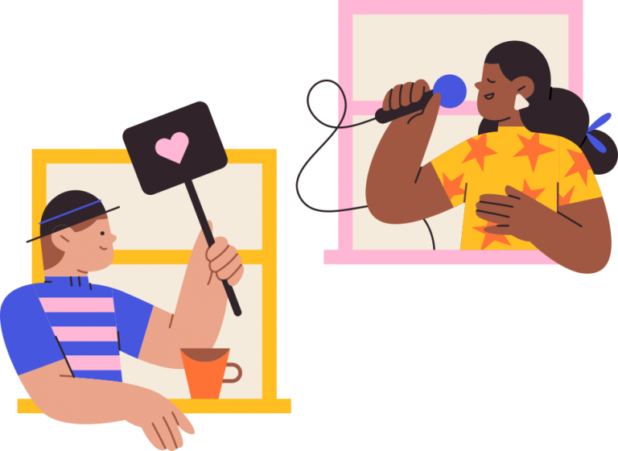

Algunos proyectos entretenidos de código abierto

Alrededor del mundo, gracias a la importancia del sector tecnológico a nivel global, existe una gran cantidad de programadores, todos con sus destrezas, afinidades y aspiraciones particulares que hacen de sus proyectos colaborativos algo interesante y único, contribuyendo con su toque personal. Debido a la gran prevalencia de prácticas de código abierto en plataformas tales como Github, utilizadas por la mayoría de los desarrolladores de software existentes, se puede ver en ocasiones cómo el proceso mediante el cual proyecto se llevó a cabo y cómo pensaron respecto a ciertos problemas que se presentaron, cómo previeron cada mínimo detalle necesario para reproducir y crear de manera independiente el producto final, ya sea una pieza de software, un diseño de hardware, o inclusive algo tan común pero no menos importante como lo es una foto o un sonido, reproducibles en todo sentido de la palabra.
Todo esto puede hacer el proceso de ver que tipos de proyectos la gente ha realizado, algo bastante interesante, inclusive más allá de la útilidad que el producto final te podría aportar. Ver como otros desarrolladores han pensado en torno a problemas específicos es algo que puede resultar increíblemente productivo a la larga, ya que te permite reconfigurar tu mente y encontrar métodos de resolución de problemas en los cuales quizás no hayas pensado, y quizás te des cuenta de que existen otros problemas en la forma en la que comunmente planteas tu flujo de trabajo.
Para encontrar cualquier cantidad de proyectos increíbles en todo tipo de áreas (ya sea inteligencia artificial, ingeniería eléctrica, la física, los videojuegos o el procesamiento de imágenes y sonido) solo hace falta un poco de curiosidad y algo de tiempo libre. A pesar de que existen muchas iniciativas que pueden llegar a parecer algo sencillas o no muy claras, hay muchas personas cuyo trabajo está lleno de pasión, y realmente se merece tu atención. Desde lectores digitales de tinta electrónica D.I.Y. hasta inteligencia artificial que compone canciones basadas en tu estilo, te sorprenderá la cantidad de creatividad que pueden mostrar.
Handmade Hero
Handmade Hero1 es un proyecto en marcha que intenta "crear un juego completo, de calidad profesional, acompañado por videos que expliquen cada línea de su codigo fuente". Se trata de directos de dos horas cada uno, hasta la fecha, han habido 609, mediante los cuales el programador (Casey Muratori) explica paso a paso cómo él crea un juego desde cero, desde la creación del entorno de programación en el cual se va a compilar el coóigo, pasando por una multitud de temas relacionados a escritura de código multiplataforma, salida de sonido, arquitectura del juego, manejo de memoría, renderización de gráficos, procesos de debugging, uso de OpenGL, voxeles, entre muchos otros más. En cuanto se lance el juego al mercado, éste se venderá junto al código fuente, el cual estará disponible bajo una licencia de acceso público después de dos años.
The Open Book
The Open Book2 es un proyecto disponible en GitHub que busca crear una alternativa completamente libre y abierta a aquellos dispositivos que están especializados para la lectura de libros y otros documentos digitales. Tal como lo plantean en la pagina del proyecto: "Los libros están entre los documentos más importantes de nuestra cultura, pero aún asi, todos los dispositivos de lectura - el Kobo, el Nook, la Kindle e inclusive el iPad son todos dispositivos cerrados, operando como piezas pequeñas autónomas de plataformas grandes y cerradas cuyos dueños no suelen tener los mismos intereses que sus lectores". Para este propósito, el Open Book esta diseñado de tal forma que el usuario pueda fácilmente añadir o quitar accesorios o pedazos de código según sea adecuado para sus necesidades, y tiene una documentación extensa en la cual se detalla tanto la preparación del circuito Arduino como las piezas necesarias y cómo ensamblarlas.
LifeTrac
Formando parte de la iniciativa Open Source Ecology3, como parte de un conjunto de modelos abiertos (llamado GVCS, o Global Village Construction Set4) que buscan ofrecer versiones de libre acceso de "aquellas 50 máquinas que se requieren para que exista la vida contemporánea", el LifeTrac5 se trata, tal como su nombre lo indica, de un tractor multipropósito completamente abierto y de bajo costo. Resalta, además, por su diseño modular, con motores desmontables y partes que se comparten entre las demas máquinas de este conjunto, permitiendo que tenga la habilidad de 'cambiar' de forma rápida entre éstas. Este acercamiento al modelo le otorga además una vida útíl más larga debido a que le da una mayor facilidad de reparación. En su wiki ofrecen diagramas y planos detallados que permiten a cualquiera con las herramientas adecuadas fabricar cada pieza y ensamblarla sín restricción alguna respecto a su uso.
Magenta
Magenta6 es un proyecto de investigación multimedia utilizando Python y TensorFlow para "explorar el rol del machine learning en el proceso de creación del arte y la música". Similar a otras iniciativas de inteligencia artificial, tales como MuseNet7, buscan crear algoritmos de entrenamiento y refuerzo profundo para la generación no solamente de archivos de audio, sino también de imágenes, dibujos, y otros materiales, con el propósito no tanto de "estorbar" o quizás "remplazar" artistas y músicos ya existentes, sino simplemente de proporcionarles herramientas inteligentes que actuén como una extensión de su flujo de trabajo actual. Si quieres ver los frutos de su investigación, puedes ver tanto los modelos que han creado hasta ahora en su GitHub como una lista de aplicaciones y demostraciones8 que han preparado los autores del proyecto, los cuales incluyen un percusionista que genera ritmos basados en las melodías que toques9, una inteligencia artificial que intenta emular tu estilo de composición10, y inclusive similares aplicaciones que funcionan como plugins de Ableton Live11.
Comentarios
Comments powered by Disqus